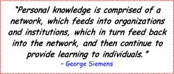

The abundance of content afforded by all of these sources can lead to information overload, and the flow of information will only continue to increase, along with the difficulty of keeping up with it. Paradoxically, this easy and instantaneous access to large amounts of information can actually impede our learning and create information anxiety -- the fear of missing a very important bit of information -- rather than aid our learning.
In addition to formal education, learning occurs via numerous informal connections that we form through both real-world contact and the Internet. The network of these connections, both personal and virtual, is collectively called a Personal Learning Network (PLN). PLNs are created by individual learners to meet those learners’ specific needs and extend learning connections to other learners around the globe who share the same or similar interests. In other words, a PLN is a group of people (e.g., students, academics, experts, professionals, and/or individuals with shared interests) who connect, communicate, and collaborate with the goal of sharing information and ideas to increase understanding of topics of interest and grow professionally. You may know the people in your PLN personally or virtually or both. A key feature of PLNs is that they meet a learner’s specific needs for information and ideas. As such, your PLN will change over time because of the new people you encounter and your changing needs and goals. Just a few years ago, PLNs were limited in scope to personal connections. Now, technology has made it very easy to develop extensive PLNs, bringing together information from people located across the globe.

So how does one go about forming a PLN? Here are some tips from Howard Rheingold4, an expert on modern communications, who also happens to be in my PLN.